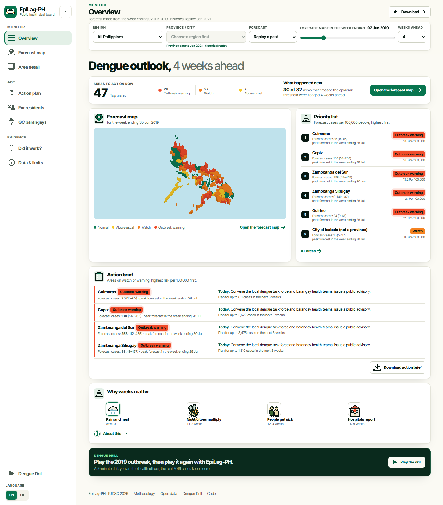
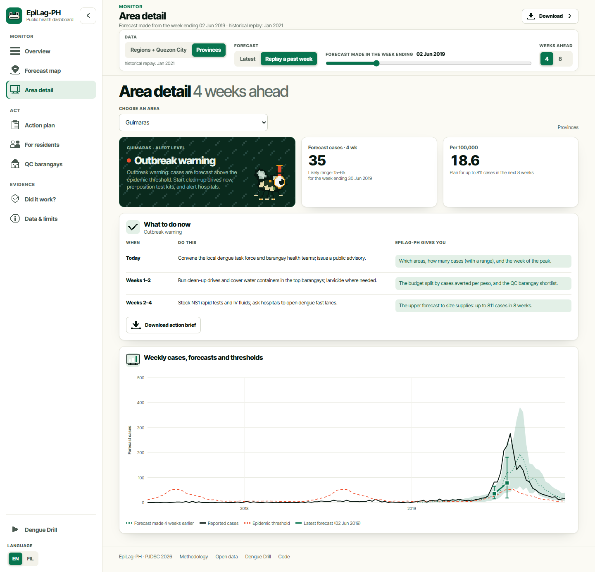
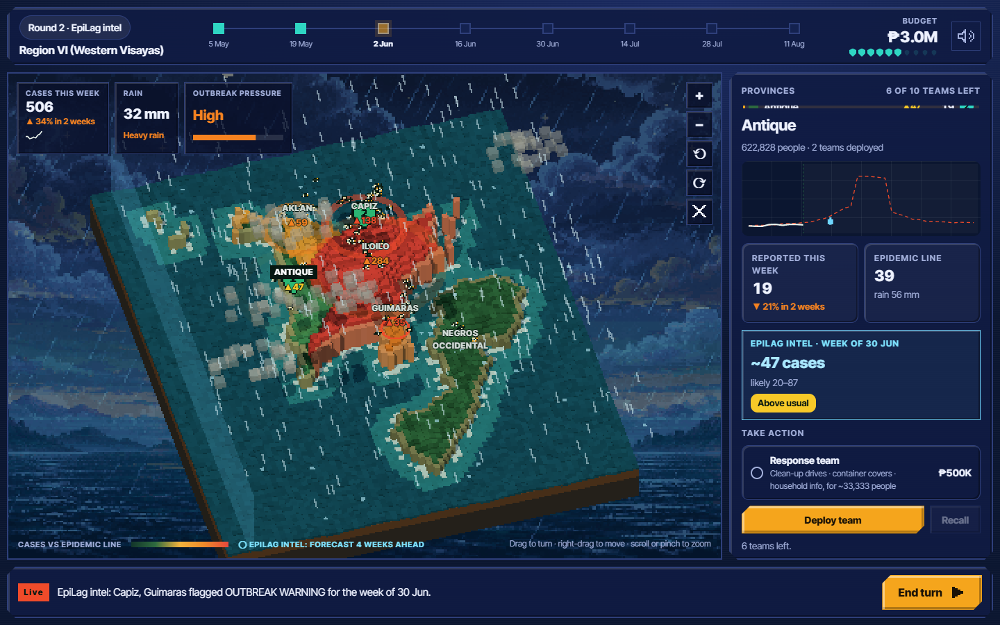

See the dengue outbreak in the data weeks before the hospitals fill.
normalabove usualwatchoutbreak warning
DiagNodes · Dacalan, Paul Henry M. · Gaytano, Kishia Nikole · Tolentino, Jhezra A.
Scan to try itepilag.vercel.app
github.com/Romeo-04/epilag01 / 25
The problem
Dengue keeps coming back, and we keep responding late.
441,902reported cases in 2019, the worst epidemic in recent years
340,860reported cases in 2024 by 16 November
~4.7×true symptomatic cases vs reported, Cebu City study
Weekly reported cases, all regions (UPRI-NOAH / HDX) · DOH via HDX · DOH · Undurraga et al., 201702 / 25
Why we respond late
Surveillance sees dengue only after people are sick enough to be counted.
1Mosquitoes breedin standing water
weeks later
2People get sickand reach clinics and hospitals
counted by week
3Cases reportedthen aggregated weekly
counts already high
4Response startsclean-ups and fogging, often near the peak
Our questionCan open data tell a health office, 4–8 weeks ahead, which areas are heading for an outbreak, and where each peso helps most?
03 / 25
Our solution
EpiLag-PH: forecast, flag, and plan.
01
Forecast
Cases 2–8 weeks ahead for every province, region and Quezon City, with a likely range.
02
Flag
Four alert levels, each explained in English and Filipino.
normalabove usualwatchoutbreak warning
03
Plan
Ranks clean-up drives and fogging by cases averted per peso, low / central / high.
₱ → cases averted
Built for City and Provincial Epidemiology and Surveillance Units and health offices. It runs on data DOH already collects.
04 / 25
How it is used · illustrative scenario
A Monday morning at a provincial health office.
01
Monday
Open EpiLag-PH
The province is on watch for 4 weeks from now; two neighbours are above usual.
02
Why?
See the drivers
Cases rising for 3 weeks; the rainy season starting.
03
Plan
₱5M budget
Clean-up drives ranked where they avert the most cases per peso.
04
Act early
Before the patients arrive
Barangay health workers start clean-ups; clinics get test kits.
05 / 25
Data
Built on the official catalogue, extended with open data.
126 → 86provinces and cities mapped to PSGC units (OCHA population and codes)
Weeklydengue cases; daily rain, temperature and humidity
OpenHDX public · ODC-ODbL · CC BY 4.0 · MIT
DOH Epidemiology Bureau via HDX (PJDSC catalogue) · UPRI-NOAH Dengue–Rainfall Dataset (Zenodo) · ERA5 via Open-Meteo · OCHA06 / 25
Data quality
We checked the data before trusting it.
126 → 86
locations mapped to PSGC units; typos like NUEVA VISCAYA, SISQUIJOR, BASILIG fixed
586
weeks in 2016–2017 show more deaths than cases, so deaths are not used
Jan 2021
is where the HDX file ends; newer data came from UPRI-NOAH at region level
NCR → 4
districts; cities folded into their provinces; Maguindanao kept whole for 2016–2020
∅ ≠ 0
missing reports stay missing, not zero
441,902
2019 total after cleaning matches the raw file exactly
07 / 25
Method
Simple, explainable models, tested honestly.
FeaturesRecent cases · same week last year · 12 weeks of rain · heavy-rain days · humidity · temperature · season · population
ModelLightGBM quantile regressionP10 · P50 · P90, one model per horizon (2, 4, 6, 8 weeks)
Calibrated rangesConformalized quantile regression“80% likely” really covers about 80%
ThresholdsPer area and week of year, earlier years onlyusual = mean · epidemic = mean + 2 SD
ExplanationsSHAP values for every forecastshown as plain-language drivers
08 / 25
How we tested
No peeking: every test year was forecast from earlier years only.
2016
2017
2018
2019
2020
2021
2022
2023
2024
2025
train: models and thresholds use only years before the test year test year: every week, 2/4/6/8 weeks ahead, every area unseen
Compare
against two simple rules: “same week last year” and “same as this week”. A model must beat both to be useful.
Provinces
test years 2019 (epidemic) and 2020 (COVID-19 reporting dip)
Regions + QC
test years 2019, 2023, 2024, 2025
09 / 25
Comparison · what changes
How EpiLag-PH compares with what LGUs do today.
Today: react to reports
Simple rules
EpiLag-PH
When it warns
After cases are counted, often near the peak
No alert levels
4–8 weeks before most outbreak starts in our tests
Says how sure it is
—
—
Calibrated 80% ranges
Explains why
—
—
Drivers for every forecast, English and Filipino
Tells where to spend
—
—
Cases averted per peso
Data needed
Weekly case reports
Weekly case reports
Weekly case reports + free weather data
Simple rules: “same week last year” and “same as this week”.
10 / 25
Model comparison · 4 weeks ahead
EpiLag-PH beats both simple rules in 5 of 6 test sets.
Same week last yearSame as this weekEpiLag-PHEpiLag-PH, lost
Bars = mean absolute error in weekly cases, relative to “same week last year” (lower is better). Red = the one loss: regions in quiet 2023, where EpiLag-PH was 4% worse than “same as this week”.
We tested EpiLag-PH against three other methods. No method wins everywhere.
Lowest error of the four, out of 24 checks
Lowest
Beat “same as this week”
LightGBMEpiLag-PH
12/24
19/24
Negative binomial
7/24
23/24
Random forest
0/24
19/24
SARIMAX
5/24
18/24
Average of the four beat “same as this week” in 24 of 24 checks (LightGBM alone: 19), with a median 2.6% lower error than LightGBM, but it caught fewer starts on Outbreak warning (30% vs 36%).
24 checks = 6 test years × 4 lead times, same no-peeking test as the submitted model. The average was chosen after seeing these years.
Negative binomialwon the flat year 2023 and the record rise of 2019 at short range: a log-linear trend has no ceiling
SARIMAXwon 2025 at 4–8 weeks and regions 2019 at 6–8 weeks
LightGBMwon every province check at 4+ weeks and all of 2024
Error 4 weeks ahead as a share of the error of “same as this week”. Below 100% beats that rule. Lowest of the four in each row marked green; red = worse than the rule.
How EpiLag-PH compares with other Philippine dengue forecasts.
Study
Area · scale
Lead time
Ranges
Alerts tested
Unseen years
vs simple baseline
EpiLag-PHLightGBM + 3 methods
104 areas · weekly
2, 4, 6, 8 wk
✓ calibrated 80%
✓ hits and false alarms
✓ 6 test sets
✓ both rules
Carvajal et al. 2018GAM, SARIMAX, RF, boosting
Metro Manila · weekly
none stated
✕
✕
2013
✕ not reported
Olana et al. 2025SARIMA, NNAR, RF, LSTM, TBATS, Prophet
national · monthly
12 months
CIs, coverage not checked
✕
2024
MASE only
Buczak et al. 2014fuzzy association rules
40 provinces · weekly
4 wk
✕
✓ sens. 0.63, spec. 0.97
2011 (and 2012)
seasonal moving avg.
Eligado et al. 2026DWT-SARMA, DWT-SARMA-LSTM
Quezon City · weekly
not reported
not reported
thresholds, no hit rate
not reported
✕ not reported
Raw errors can't be compared across studies (different places, scales and counts), so this compares what each study reports, not who is “most accurate”.
What drives the forecast, and an honest look at weather.
Influence on the 4-week forecast · provinces
Recent cases and season carry most of the signal (mean |SHAP|).
Model with weather vs without · error reduction
Removing all weather features changes error by −12% to +11% across test sets.
We tested our own assumption. At province and region scale, weather adds little beyond case trends. The early warning works from data every LGU already has.
A month before the 2019 peak, the map was already lit up.
30/32provinces that crossed the epidemic threshold 4 weeks later were already flagged
11/11regions and Quezon City
Forecasts from models trained only on 2016–2018.

App: Replay a past week18 / 25
Replay · Quezon City, 2025
A record outbreak in January, an unusual time. EpiLag-PH saw it coming.
622cases in the week ending 23 Feb 2025, the city's highest in 2010–2025
18/18weeks above the epidemic threshold in 2025 were flagged 4 weeks ahead
Honest trade-off: watch was on for 31 of 52 weeks in 2025. In calmer 2024: 13 weeks, catching all 10 weeks above the threshold.
Weekly cases, Quezon City Epidemiology and Surveillance Division data via UPRI-NOAH19 / 25

The app
One screen tells a health office where to look this week.
Map + ranked alert listForecast with range and thresholdWhy: the driversEnglish and FilipinoReplay any past week
epilag.vercel.app/web
20 / 25
Target the cure
Where does each peso prevent the most cases?
forecastcases expected
×
share coveredreach of each action
×
effectcautious range
=
cases avertedfunded best per peso first
OR 0.22
community clean-up with container covers, in a meta-analysis (Bowman et al., 2016)
Fogging
little evidence, so a cautious effect range
Your costs
editable: each LGU enters its own
src/allocate.py21 / 25
Dengue Drill
Play the 2019 outbreak. Then play it again with EpiLag-PH.
You are the health officer: ₱5 million, 8 turns, and the real 2019 cases decide the score.
11/17regions where following EpiLag's alerts averted more cases than reacting to reports
About the same in 1 region, fewer in 5. Cautious effect ranges (Bowman et al., 2016).

epilag.vercel.app/drill22 / 25
Impact
Weeks of lead time, with data the system already has.
4–8wkslead time for watch alerts on most outbreak starts in the tests
₱0data cost: open data only, runs on a laptop or free hosting
Any LGUneeds only weekly case counts and free weather data
Earlier actionSmarter spendingFits UHC and devolved healthPlain-language outlook for residentsOpen data: CSV and JSON
23 / 25
Limits and next steps
What EpiLag-PHcannot do yet.
Limits
Province data ends Jan 2021; the province view is a replay
Watch alerts have many false alarms
Reported cases undercount infections
One weather point per area
Budget effects and costs are assumptions
Next steps
Current weekly PIDSR data through DOH or an LGU partner
Barangay-level weekly data with a city CESU
Pilot one rainy season; measure lead time and costs
SMS alerts in Filipino to barangay health workers
24 / 25
Thank you
“Hospitals see dengue a month too late. EpiLag-PH sees it in the data, and tells LGUs where to act first.”
Code, data pipeline, results and app: github.com/Romeo-04/epilag · App: epilag.vercel.app/web
Bowman, L. R., Donegan, S., & McCall, P. J. (2016). Is dengue vector control deficient in effectiveness or evidence? PLOS Neglected Tropical Diseases, 10(3), e0004551.
Undurraga, E. A., et al. (2017). Disease burden of dengue in the Philippines: Adjusting for underreporting. Am. J. Trop. Med. Hyg., 96(4), 887–898.
Olana, K. O. A., et al. (2025). Spatial distribution analysis and comparative forecasting of dengue resurgence in the Philippines (2025–2027). Transboundary and Emerging Diseases, 7480710.
Romano, Y., Patterson, E., & Candès, E. (2019). Conformalized quantile regression. NeurIPS 32.
Carvajal, T. M., et al. (2018). Machine learning methods reveal the temporal pattern of dengue incidence using meteorological factors in metropolitan Manila, Philippines. BMC Infectious Diseases, 18, 183. · Buczak, A. L., et al. (2014). Prediction of high incidence of dengue in the Philippines. PLOS NTD, 8(4), e2771. · Eligado, A. A., et al. (2026). Advancing outbreak detection: Hybridizing machine learning with wavelets for weekly dengue case forecasting. PLOS NTD, 20(7), e0014444.
Pelitro, K. J., et al. (2026). Weekly dengue incidence linked to satellite rainfall (v1.0.0). Zenodo 19448695. · DOH Epidemiology Bureau dengue data via HDX · ERA5 via Open-Meteo · OCHA COD-AB/COD-PS.